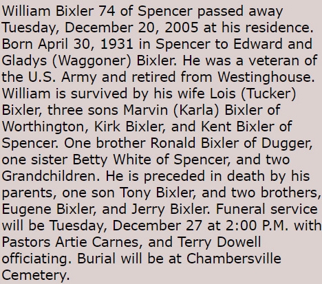

William Edward Bixler 1931 - 2005
[ Home ] | [ Calendar ] | [ Surnames Index ] | [ Family History ]The eldest of 3 children of Edward Bixler (a farm hands) and Gladys Waggoner, William Bixler, the fifth cousin once-removed on the mother's side of <a href="I1.html">Nigel Horne</a>, was born in Spencer, Owen, Indiana, USA on Apr 30, 1931<span class="citation">1,2,3,4</span>. He was married to Lois Tucker. On Apr 1, 1940, he lived at his birthplace<span class="citation">3</span> which is where he died on Dec 20, 2005<span class="citation">1,2,4</span>.
Parents
- Edward Gabrial was born on May 13, 1910
- Gladys was born in 1914
Citations
- Social Security Death Index - Findmypast
- U.S. Veteran's Gravesites - Findmypast
- US Census 1940 - Findmypast (was age 8 and the son of the head of the household)
- United States Billion Graves index - Findmypast
Media
William Bixler - Obituary

United States Billion Graves index - US/BMD/BILLION/5/000028933323
Social Security Death Index - USBMD/SSDI/312306606
U.S. Veteran's Gravesites - USM/VETGRV/2149538
Family Tree

Generated by Ged2Site. Last updated on Jul 20, 2025